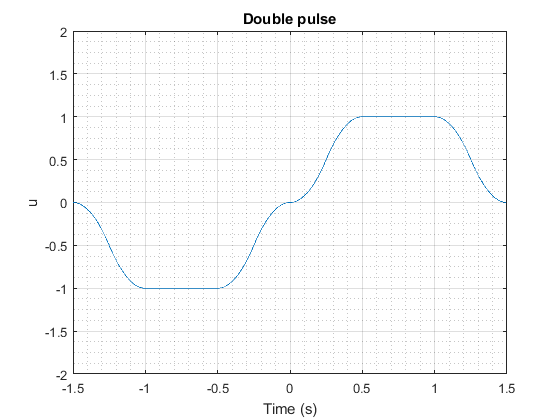
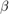

Project by Dinis Rodrigues nº79089 and José Fernandes nº82414
For the 2nd Laboratory of MSIM
Contents
P2 -> Pulse function
function lab2
close all; %Load file in system memory file='diska'; load_system(file); t=linspace(-1,1,1000); t=t'; b=0.5; y=pB(t,b); figure plot(t,y) xlabel('Time (s)'); ylabel('u','Interpreter','tex'); title('Pulse','Interpreter','tex'); grid on grid minor ylim([0 1.5])
With
P3
data=U(1.5,1,0.5,-1,1,1000,1000); u=data(:,2); t=data(:,1); plot(t,u); ylim([-2 2]) xlabel('Time (s)'); ylabel('u','Interpreter','tex'); title('Double pulse','Interpreter','tex'); grid on grid minor
P7
some(1)
Phase model with $ and $
some(2)
% Phase model with $ and $
some(3)
% Phase model with $ and $
var=ex7(0.025,1);
data=U(var(1),1,0.025,-var(2),var(3),1000,1000);
u=data(:,2);
t=data(:,1);
figure
plot(t,u)
ylim([-1.5 1.5])
xlabel('Time (s)');
ylabel('u','Interpreter','tex');
title('Disturbed variation \beta=0.025 with \alpha=1','Interpreter','tex');
grid on
grid minor
y1=zeros([length(u) 1]);
y1dot=zeros([length(u) 1]);
for i=1 : length(t)
y1(i)=1*exp(t(i).^2/2);
y1dot(i)=u(i)*t(i);
end
figure
plot(y1,y1dot)
xlabel('y');
ylabel('y_dot','Interpreter','tex');
title('Phase Model','Interpreter','tex');
grid on
grid minor
Disturbed variation with  = 0.025
P8
StopTime='5'; Step='0.001'; set_param(file,'StopTime',StopTime); set_param(file,'FixedStep',Step); mod=sim(file,'SimulationMode','Normal'); %ydot=mod.get('data1'); y=mod.get('fcn'); clk=mod.get('clock'); figure plot(clk,y); grid on grid minor xlabel('u'); ylabel('Time (s)','Interpreter','tex'); title('Dynamic actuaction with chattering','Interpreter','tex'); xlim([1.5 3])
We can see that the dynamic actuaction results in a similar result as before, the principle is the same nonetheless, we get signal chattering. This means that the signal is switching values at high frequency. When comparing the signal, as they are in near values at short distances, this will result in a noise output.
P10 and P11
save_system('diska') close_system('diska'); load_system('disk2a'); StopTime='20'; Step='0.001'; set_param('disk2a','StopTime',StopTime); set_param('disk2a','FixedStep',Step); mod=sim('disk2a','SimulationMode','Normal'); %ydot=mod.get('data1'); y=mod.get('fcn'); clk=mod.get('clock'); figure plot(clk,y); grid on grid minor xlabel('u'); ylabel('Time (s)','Interpreter','tex'); title('Dynamic actuaction without chattering','Interpreter','tex'); ylim([-1.5 1.5])
A copy of the original file "diska" has been created because it was last saved in an earlier version of Simulink. To recover the original version, rename the file "diska.r2015a" as "diska".
You can turn this feature off using the <a href="matlab:slprivate('showprefs')">Simulink Preferences</a>. Click <a href="matlab:com.mathworks.services.Prefs.setBooleanPref('SimulinkShowPersistentBackupNotification',false)">here</a> if you don't want to see this message again.
Warning: Square root of a negative number in 'disk2a/Subsys/Fcn'
Comparing this model with the previous one, we can see that we are producing stable square waves, it's not considered a chattered signal because they aren't at a high frequency, and if even they where, they are designed to preform as such. Observing this signal, we see that the response time is "instant" meanwhle, the previous model has a delay swithcing between values.
P12
var=ex7(0.025,1);
data=U(var(1),1,0.025,-var(2),var(3),1000,1000);
u=data(:,2);
t=data(:,1);
mod=sim('disk2a','SimulationMode','Normal');
%ydot=mod.get('data1');
y=mod.get('fcn');
clk=mod.get('clock');
figure
plot(clk,y);
grid on
grid minor
xlabel('u');
ylabel('Time (s)','Interpreter','tex');
title('Dynamic actuaction without chattering','Interpreter','tex');
ylim([-1.5 1.5])
figure
plot(t,u)
ylim([-1.5 1.5])
xlabel('Time (s)');
ylabel('u','Interpreter','tex');
title('Disturbed variation \beta=0.025 with \alpha=1','Interpreter','tex');
grid on
grid minor
Warning: Square root of a negative number in 'disk2a/Subsys/Fcn'

Observing this two methods we can say that they actuacte in a close relation, but if we evaluate closely the disturbed method, we can see that the time response doesn't get to the level we get in the dynamic method
end function some(k) b=[1 0.7 0.3]; a=[1 1 1]; var=ex7(b(k),a(k)); data=U(var(1),a(k),b(k),-var(2),var(3),1000,1000); u=data(:,2); t=data(:,1); y1=zeros([length(u) 1]); y1dot=zeros([length(u) 1]); for i=1 : length(t) y1(i)=1*exp(t(i).^2/2); y1dot(i)=u(i)*t(i); end h=figure; plot(y1,y1dot) grid on grid minor xlabel('Time (s)'); ylabel('u','Interpreter','tex'); if k==1 title('Phase Model with \alpha=1 and \beta=1','Interpreter','tex'); elseif k==2 title('Phase Model with \alpha=1 and \beta=0.7','Interpreter','tex'); else title('Phase Model with \alpha=1 and \beta=0.3','Interpreter','tex'); end grid on grid minor end
Double Pulse Function
function data = U(T,a,b,U1,U2,n1,n2) t1=linspace(-T/2,T/2,n1); t1=t1'; t2=linspace(-a*T/2,a*T/2,n2); t2=t2'; u1=U1*pB(t1,b); t1=(t1-T/2)/(T/(1+b)); u2=U2*pB(t2,b); t2=(t2+a*T/2)/(a*T/(1+b)); t=vertcat(t1,t2); u=vertcat(u1,u2); data=[t u]; end
Aux Function
function var=ex7(b,a) T=sqrt((1+b)/a); U1=a; U2=U1/a; var=[T U1 U2]; end
Pulse Function
function y=pB(t,b) L=length(t); y=zeros([L 1]); %Theoretical equations for k=1:L if (t(k) > b/2+0.5) || (t(k) < (-b/2)-0.5) y(k)=0; elseif (t(k) <= 0.5+ b/2) && (t(k) >=0.5)%quart y(k)=(4*t(k)^2 -(4*b+4)*t(k) + b^2 + 2*b +1)/(2*b^2); elseif (t(k) >= -0.5) && (t(k) <= b/2 - 0.5)%segunda y(k)=0.5-(4*t(k)^2 +(4-4*b)*t(k) - 2*b +1)/(2*b^2); elseif (t(k) >= -b/2-0.5) && (t(k) <= -0.5)%primeira y(k)=(4*t(k)^2 +(4*b+4)*t(k) + b^2 + 2*b +1)/(2*b^2); elseif t(k) >=-b/2+0.5 && t(k)<=0.5%terc y(k)=0.5-(4*t(k)^2 +(4*b-4)*t(k) - 2*b +1)/(2*b^2); else y(k)=1; end end end